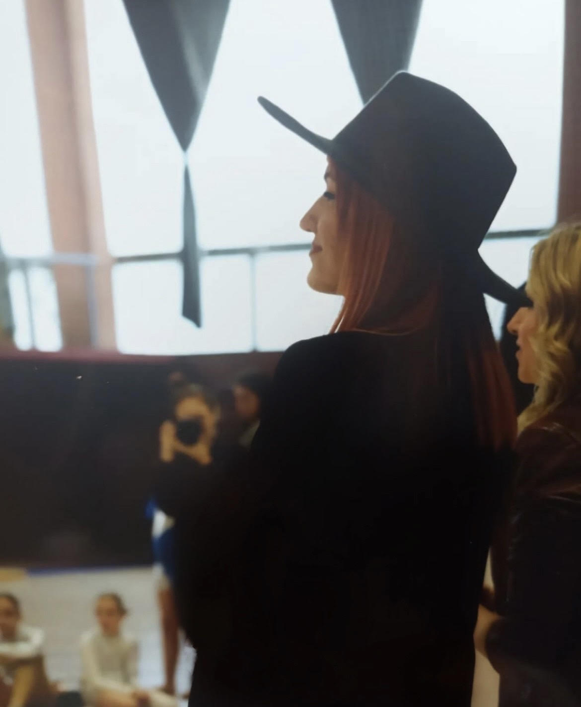

Osnivač i umetnički direktor RDC-a je Ana Andrejić.
/Dipl.balerina/profesionalni igrač savremene igre/ dipl.žurnalista/
Rođena u Požarevcu 10.novembra 1991.godine.
Baletsku karijeru počinje u baletskom studiju ,,Amadeus” sa svoje tri godine. Kasnije paralelno sa studijom upisuje i završava osnovnu baletsku školu ,, Dimitrije Parlić" u Pančevu. Nakon završene osnovne redovne i baletske škole, upisuje Požarevačku gimnaziju.
Sa 14 godina odlazi iz Požarevca i završava školovanje u Srednjoj baletskoj školi u Novom Sadu, odsek za savremenu igru u klasi prof. Aleksandre Ketig kao vukovac.
Svoju edukaciju nastavlja kroz usavršavanja i seminare kod Zorana Markovića, Milana Madareva, Staše Zurovca, Rossane Damiano, Dinka Bogdanića, Isira Makuloluwe, igrača Netherland Dance Teatra, Kulberg baleta, Miloša Isailovića, Staše Stanković, Nataše Gozdenović, Isidore Stanišić, Matevz Cesen, Milice Cerovió, Mrrables. Bila je član Srpskog narodnog pozorišta i DaNs ansambla.
Najveću satisfakciju pored scene joj pruža rad sa decom te se opredeljuje za upoznavanje mladih sa svetom baleta i savremene igre.
Svoju pedagošku karijeru počinje 2011. godine u Novom Sadu u jednom baletskom studiju i polako gradi put pedagoga i koreografa.
2015. godine pri CTKU “Kosta Abrašević” drži baletsku sekciju i 2016. godine se u Bačkoj Palanci osniva Royal Dance Centar koji traje i trajaće jos dugo jer njena želja da se baletska umetnost u potpunosti podigne na viši nivo u ovom gradu ne slabi.
 Baletsku karijeru počinje u baletskom studiju ,,Amadeus” sa svoje tri godine. Kasnije paralelno sa studijom upisuje i završava osnovnu baletsku školu ,, Dimitrije Parlić" u Pančevu. Nakon završene osnovne redovne i baletske škole, upisuje Požarevačku gimnaziju.
Baletsku karijeru počinje u baletskom studiju ,,Amadeus” sa svoje tri godine. Kasnije paralelno sa studijom upisuje i završava osnovnu baletsku školu ,, Dimitrije Parlić" u Pančevu. Nakon završene osnovne redovne i baletske škole, upisuje Požarevačku gimnaziju.